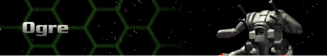
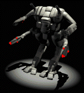

› |
› |
› |
› |
Ogre |

|
Chassis: Ogre Both the Ogre and the Giant are the backbone of the modern Herc force. The Ogre has enough energy-based attacks to break through many types of shielding and still deliver a double ballistic salvo. It’s the most independent Herc available to the Unit Leader. Standard equipment: Standard Sensor 12.14 Amplitude, a Fission 200 reactor, Bertrand-Altase targeting computer, Shield 900 shield class, Chemical 180 battery, Standard Life Support, 18cm armor, Pre-Flexive drive system, a jump capability of one, and medium movement yield. Available at Tech Level 1. |
 |
Max. Weapons Capabilities
These are all of the weapons which can be mounted to this Herc once you have reached all Technology levels through promotions.
| Energy | Missile | Cannon | Plasma | ELF | Adv. Tech. |
|---|---|---|---|---|---|
| SE400 Laser Cannon | 20mm Autocannon | Fusion Flamer | Lt. ELF | Neutron Gun | |
| SC400 Comp. Laser | 50mm Autocannon | Plasma Cannon | Med. ELF | Thermal Lance | |
| SP500 Lt. Pulse Laser | 30mm Chain Gun | Plasma Beam | Auto ELF | EMP Blaster | |
| SE660 Laser Cannon | 90mm Accel. Cannon | Fusion Cannon | Chain ELF | Lt. Particle Gun | |
| SE1000 Laser Cannon SC1000 Comp. Laser |
100mm Accel. Chain Gun | Fusion Gatling | Hvy. ELF ELF Mortar |
Particle Beam Wpn. | |
| SP750 Std. Pulse Laser | Devastator | EMP Beamer | |||
| SE700 Laser Gatling | Neutron Beam | ||||
| SP800 Pulse Laser Gatling | Thermal Needler | ||||
| Lt. Comp. Blaster | EMP |